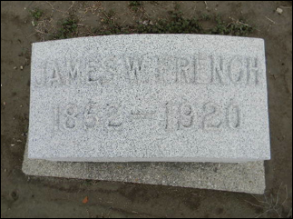
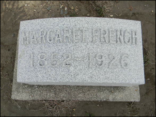

French Family Association
The Official Website of the Surname French
Christopher C. Walker Farmhouse, 1884 house and
1879 barn
in Harrison Township, Darke Co., Ohio
Chart #204, Samuel French, 1765
Blue Skin, Smithfield, Middleway, and Jefferson Co.,
VA
Abbotsville, Washington, Brownsville,
Harrison, and Hollandsburg, Darke
Co., OH
This chart updated by Mara French on 9/27/11. Numbers in brackets [ ] show sources and refer to the bibliography at the end of this chart. An asterisk (*) shows continuation of that line. Send any corrections or additions to this chart to marafrench@mindspring.com. Revisions: 2011.
Contents
Foreword
IÕve researched this line just about all I can from ancestry.com and from the internet. Additions need to come from family members or from local books or historians who havenÕt put their information online.
P.S. Although Samuel French is not of my line, I will continue to do research on him as time permits. My line is FFA Chart #6.
Background and History
Family lore has it that Samuel French migrated to Jefferson County, Virginia, from England with his brothers [1], for whatever that means. All searches in England for a Samuel French who did not remain in England, but who immigrated to America, do not show a match. The immigration must have taken place earlier. Therefore, we consider Samuel as born in Virginia. It is somewhat difficult to depend on Samuel FrenchÕs father or mother having the names of SamuelÕs children, because the two children that we have for Samuel, Walter and Hester, were both named after SamuelÕs wifeÕs side. The next generation shows a James and Mary Jane, who need to be researched to see if those are the names of SamuelÕs parents, other than the name Samuel of course. The Samuel French born in Virginia in 1740 migrated to Limestone Co., Alabama; therefore, he is probably not of this line, but of FFA Chart #146.
The names Willard, Willet, and Wilbur in this line are curious. ÒAÓ James Wilbur French was b. 1765 in VA, and he belongs to FFA Chart #12. His DNA does not match that of Samuel French. For any questions regarding DNA, please email Julia at juliaFWood@aol.com.
Samuel is also not the Samuel French, b. ca. 1760, in VA, who moved to Kentucky and Indiana, FFA Chart #194. The DNA of that line is different, plus his childrenÕs names and places of birth are very different.
Surname Shirley
Jack V. Williams [3] has researched the surname Shirley since 1982. His ancestor, Walter Shirley, was b. 27 May 1690 most likely in England, and d. 1755 in Frederick Co., VA. This data could indicate that Samuel French was from England, or it could indicate that his ancestors immigrated during the same time as the Shirley family, probably ca. 1720-30 as the ShirleyÕs first appearance on the tax list was in 1733 in St. LeonardÕs Creek Hundred, Calvert Co., Maryland. Walter Shirley first appeared in Frederick Co., VA, in 1744, b. 1728, d. 1804 in Jefferson Co., WV. His father, also Walter Shirley, was b. 27 May 1690 in Staunton Harold, Ashby-de-la-Zouch, Leicestershire, UK [3]. This in no way indicates that the French family was from the same area in England; in fact to the contrary, I did not find any French at that location.
Elisabeth ShirleyÕs brother, Lawrence Vance Shirley, was born 1780 in Frederick Co., VA. He married Elizabeth Haynes in Ohio on 25 May 1808, showing that both the French and Shirley families moved to Ohio. The earliest record for the French family in Harrison, Darke Co., OH was 1830; however, perhaps they migrated sooner and with the Shirley family by 1808. Therefore, looking at the 1810 census of Darke Co., OH, I find nothing in all Ohio for a French. Looking at the 1820 census of Ohio, I find many head of households named French, but no Samuel nor Walter. OK, so letÕs try the 1830 census. At last I find a two men named Samuel French, both living in Warren Co., OH, one with a family of 5 and the other with 7. Then, looking at the 1840 census when I know Samuel was in OH, I find the same 2 in Warren Co., and another in Tuscarawas Co., one in Hamilton Co., and one in Trumbull Co. Looking at the ages of their children, it seems obvious to me that Samuel died in Virginia and never migrated to OH.
Trying another avenue, letÕs try Walter in the 1830 and 1840 census records. He had moved to Ohio before 1824 as his wife died there then. He returned to Jefferson Co., VA, and then returned back to Ohio in the 1830s. Walter is not in the census records of 1830 nor 1840 in Ohio, Virginia, or any other place. The 1830 census of Madison, Butler Co., OH does show a Horace N. French. Walter appears as W. W. French in the 1840 census of Washington, Darke Co., OH. At that time he was 52 years old. His family consisted of 2 females between 15-19 years old (Mary Jane and Phoebe), 2 females between 10-14 (Rachel and Elizabeth), 1 female 5-9 (Emily), a male between 50-59 (Walter), and a male between 20-29 (James or Samuel). Therefore, any research on Samuel French or Elisabeth Shirley needs to be done in Virginia and not Ohio.
First Generation
1.1* Samuel French, b. ca. 1765 in Bull Skin/Smithfield/Middleway, Virginia (now Middleway, Jefferson Co., WV), m. Elisabeth Shirley, 1790, VA, the dau. of Walter Shirley Jr. and Hester Vance. He was a teacher in Jefferson Co., WV (formerly Berkeley Co., WV), and a shoemaker [1]. Shirley was b. ca. 1764 in VA and moved to Western Ohio. Ancestry.com shows no Samuel in this location at this time. Shirley was already in VA when she married Samuel, therefore, Samuel was in Jefferson Co., WV by 1789 or before, and most likely was born there.
Bull Skin, Smithfield, Middleway, WizardÕs Clip
Bull Skin is in present day Jefferson County near the Berkeley County and Virginia line. The Board of Geographic Names told me the area was originally called Bull Skin, after the creek by the same name, but was later changed to Smithfield or Smithfield Estates. Its name was later changed to Middleway because it was halfway between Winchester and Harpers Ferry and because there was already a Smithfield somewhere else in Virginia and the mail was getting lost. Supposedly, in the late 1700s or early 1800s there was a famous haunting there by a demon who cut up things with a pair of scissors, after which the residents began calling the place "Wizards Clip" or "Clip" and began calling themselves "Clippers." [1]
Second Generation
Children of Samuel and Elisabeth (Shirley) French, 1.1
2.1* Walter Willard French, b. 1 Mar 1792 in Jefferson Co., Virginia (now WV), d. 21 Jul 1880 in Darke, OH, and is buried at the Hollansburg Cemetery in Hollansburg, Darke Co., OH, 86 years, 4 months, 20 days. He was in the War of 1812. He m1. Rachel P. Blue in 1812 in Jefferson Co., VA, and moved to Brownsville, Licking Co., OH where Rachel died in 1824. She was b. in 1796. They had 3 children. He was named after his motherÕs father, Walter Shirley. After his first wife died, Walter returned to Jefferson Co., VA, and ÒreadÓ medicine and acted as ÒcollectorÓ. In the 1830s, Walter and family moved to Darke Co., OH, and remained there for the remainder of their lives in Harrison township.
Walter m2. Lavinia or Levina Bailey on 12 Jan 1825 in Frederick Co., VA. She was b. 29 Jul 1800 in VA and d. 25 Jul 1875 in OH. Lavina or Levina was 70 in 1870 and they lived in Harrison, Darke Co., OH, with the Heironomus family; their daughter was married to a Heironomus. They lived in Harrison, Darke Co., OH between 1850 and 1870 censuses. They are not listed in the 1880 census. They m. 12 Jan 1825 and had 2 children.
Walter was a saddlebag (excess fat around the hips and thighs) doctor. Walter was a veteran of the War of 1812, having served in Captain Thomas CockrellÕs Company under Lt. Col. George Minor, First Regiment, in the Virginia Militia.
[6]
2.2 Hester French, m. John Games on 24 Mar 1821 in Frederick Co., VA (now WV). She was named after her grandmother on her motherÕs side.
Third Generation
Children of Walter W. and Rachel P. (Blue) French, 2.1
3.1* James Walter (or Willet) French, b. 7 Jul 1816 in Jefferson Co., VA (now WV), d. 25 Jan 1901 in Gibson, IN, m. Barbara Maria Null on 4 Dec 1839 in Xenia, Greene Co., OH, and d. 25 Jan 1901 in Gibson Co., IN [3], and is buried at the Providence Cemetery, Francisco Co., IN. They had 5 children. James moved to the vicinity of Princeton, IN, in the late 1830s to the late 1840s, and disappeared from the family history. The 1850 census shows 2 children both born in Harrison, Darke Co., OH: Walter W. French, b. 1847 and Levina E. French, b. ca. 1849.
3.2* Samuel Jackson French, b. 1819 in Alexandria, Jefferson Co., VA, m. Mary Pember on 2 Sep 1844 in Darke Co., OH [3].
3.3 Mary Jane French, b. 7 Apr 1821 in Jefferson Co., VA, m. John Conrad Heironimus on 15 Dec 1839 in Darke Co., OH. John was b. 1 Apr 1810 and d. 23 Jul 1879. In 1871 when she was widowed, she lived with her father in Jefferson Co., OH. Mary Jane and John had 11 children: Elmira L., Walter A., Eliza J., Eliza A., Narcissus V., John W., Andrew P., Camelius P., Charles W., Minerva C., Emma R. Heironimus. Descendant is Ref. [10].
Children of Walter W. and Lavina (Bailey) French, 2.1
Walter W. French had no sons by this second marriage to carry on the French name.
3.4 Martha French, died in infancy [3].
3.5 Walter J. B. French, died in infancy [3].
3.6 Phoebe Levina French, b. 29 Oct 1825 in Frederick Co., VA, m. Robert M. C. Little on 26 Jan 1847 in Darke Co., OH. She d. 6 Jan 1912 in Columbus, IN [3].
3.7 Rachel Ann French, b. 7 Jun 1829 in Frederick Co., VA, m. Joseph Gist Harland on 7 May 1888 in Darke Co., OH. She d. 6 Sep 1908 in Union City, IN [3].
3.8 Elizabeth French, b. 12 Jun 1830 in VA, m. David Ryan. She d. 26 Jun 1914 [3] in Hollandsburg, OH.
3.8 Emily Ellen French, b. ca. 1832 in VA, m. J. M. Harrison [3].
Fourth Generation
Children of James Walter and Barbara Maria (Null) French, 3.1
4.1 Lavinia E. French, b. ca. 1849, lived in Harrison, Darke Co., OH in the 1850 census.
4.2* John Heironimus French, b. 30 Jun 1843 in IN, m. Julia Combs on 27 Jan 1876 in Gibson Co., IN, d. 17 May 1902 in Somerville, IN. The 1880 census shows he was living in Barton, Gibson Co., IN, age 36, with his wife Julia, working as a farmer, and living with newborn son Charles, and JohnÕs father James W. It states that both his parents were born in Virginia.
4.3 Louisa French, b. 30 May 1845 in IN, m. Jacob Kolb and had 5 children: Charles, John, Willard Lester, Joseph, and Samuel Jacob Kolb. Louisa d. in 1881 in Princeton, Gibson Co., IN. Jacob Kolk was b. 1836, d. 1913.
4.4 Mary Ellen French, b. 1848.
4.5 George G. French, b. 1850, d. 1895.
Children of Samuel J. and Mary (Pember) French, 3.2
4.6 Walter W. French, b. 13 Jun 1845, d. 25 Feb 1865 at the Army Hospital in Grafton, WV [3].
4.7 Lovina Elizabeth French, b. 15 Nov 1848 in Bartonia, Randolph Co., IN, d. 7 Jun 1939 in Harriman, Roane Co., TN, m. David Curtis Mote on 20 Jan 1867 in Coletown, Darke Co., OH [3]..
4.8* James William French, b. 13 Jan 1852 in Hollansburg, Darke Co., OH, d. 7 Feb 1920 in Butler township, Darke Co., OH, m. Margarett Crick on 16 Nov 1874 [3]. Both are buried at the Abbotsville Cemetery in Abbotsville, Darke Co., OH.
 
Margarett French was born in Ohio, and in the 1880 census, she lived in Washington, Darke Co., OH with James and her 3 children: Walter, Roy, and Lark.
4.9 Willard B. French, b. 28 Apr 1854, d. 21 Sep 1884 in Sharpeye, Darke Co., OH, m. Victoria Isabella Jefferies on 1 Jan 1880 [3] and he died 4 years later; most probably no heirs. He was a laborer. By the age of 6 in 1860, he was living with the Pember family on his motherÕs side in Greenville, Darke Co., OH.
Greenville in 1857 at the time the French family lived there.
4.10 Margaret Jane French, b. 1856, d. 1938, m. Francis Ware on 8 Aug 1874 in Darke Co., OH [3].
There was a William French b. 1858 in OH, living in Washington, Darke Co., OH in 1870, age only 12, living with the Rank and Davis families. We are unsure who he is.
Fifth Generation
Children of John H. and Julia (Combs) French, 4.2
5.1* Charles Walter French, b. 16 Sep 1878 in IN, d. 18 May 1965 and is buried at the Texline Cemetery in Texline, Dallam Co., TX, near his son Charles who had died 2 years earlier. In the 1900 census, he was living in Barton, married to Rosa Z. or Rosetta Green on 25 Aug 1895 in Gibson Co., IN, with 2 children, Cora and Ettie. In the 1910 census, they were living in Dallam Co., TX. In the 1920 census, they were living in Carson, TX. In the 1930 census, they were living in Texline, Dallam Co., TX.
5.2 Carrie Elizabeth French, b. ca. 1880, m. Onyette in 1904, d. 1929.
5.3 Rosa Belle French, b. ca. 1882, d. 1923.
Children of James William and Margaret (Crick) French, 4.8
5.4 Walter W. French, b. 1876 in Ohio, lived in Washington, Darke Co., OH in the 1880 census. He m. Ida Elizabeth Shields on 26 Sep 1897 in Darke Co., OH. She was b. 16 Sep 1877 in Darke Co., OH. After Walter died, she m2. Wesley J. Slade. She and her husbands are buried at Abbottsville Cemetery, Van Buren Twp., Darke Co., OH.
5.5* Roy Sylvester French, b. 16 Oct 1877 in Darke Co., OH, d. 20 Feb 1948, m. Lucy Jane Marker who was b. 1878, d. 1965. Both are buried at the Abbotsville Cemetery in Abbotsville, Darke Co., OH. Roy and Lucy lived in Greenville, Dark Co., OH in the 1930 census. In the 1920 census, he was living in Van Buren, Darke Co., OH, stating that both of his parents were born in OH.
5.6 Lark Levi French, b. 5 Nov 1879 in OH. He moved to Victor, DeKalb Co., IL, where he was in the 1900 census, and became a servant.
5.7 Franklin James French, b. 25 Mar 1885 in Darke Co., OH, d. 18 Oct 1944 in Plentywood, Sheridan Co., Montana. He m. Susanna Catherine Fry who was b. 1891, d. 1967. Both are buried at the Abbotsville Cemetery in Abbotsville, Darke Co., OH.

Sixth Generation
Children of Charles W. and Rosa Z. (Green) French, 5.1
6.1 Cora E. French, b. Nov 1896 in Barton, Gibson Co., IN. By the 1910 census, she was living in Dallam Co., TX.
6.2 Ettie E. French, b. 1900 in Barton, Gibson Co., IN. By the 1910 census, she was living in Dallam Co., TX. In the 1920 census, she was living in Carson, TX.
6.3 John F. French, b. 1904 in IL, was living in Carson, TX in the 1920 census, and in Texline, Dallam Co., TX, in the 1930 census. He m. Bessie, also born in 1904.
6.4 Charles Hester French, b. 25 Mar 1911 in TX. In the 1920 census, he was living in Carson, TX. He d. 27 Jan 1963 and is buried near his father at the Texline Cemetery in Texline, Dallam Co., TX.
6.5 Rosie S. French, b. 1914 in TX. In the 1920 census, she was living in Carson, TX.
6.6 July T. French, b. 1919 in TX. In the 1920 census, she was living in Carson, TX. In the 1930 census, she was living in Texline, Dallam Co., TX.
Children of Roy Sylvester and Lucy Jane (Marker) French, 5.5
6.7 Romey Irene French, b. 23 Jan 1904 in OH, daughter, lived in Van Buren, Darke Co., OH in the 1920 census. In the 1910 census, she was living in Greenville, Darke Co., OH. She d. 7 Nov 1989 in Dayton, Montgomery Co., OH, at the age of 85. She married Robert F. Hocker who survived her; he was also born in 1904 and died on 22 May 1993; he was a manager and administrator at a construction company. She had 2 years of college and worked as a hairdresser and cosmetologist at a beauty shop. She lived at 5533 Basore Rd., Dayton, Montgomery Co., OH, in the 1930 census.
6.8 Ralph L. French, b. 17 May 1906, lived in Greenville, Darke Co., OH in the 1930 census. He d. 16 Jun 1974 and was buried at the Abbotsville Cemetery in Abbotsville, Darke Co., OH.
6.9 Rhoda Helen French, b. 17 Feb 1900 in Darke Co., OH, d. 29 Jul 1900 in infancy in Darke Co., OH. She was buried at the Abbotsville Cemetery in Abbotsville, Darke Co., OH.
6.10 Robert I. French, b. 1909, d. 9 Jan 1973 in Dayton, Montgomery Co., OH. He was buried at the Abbotsville Cemetery in Abbotsville, Darke Co., OH, lived in Greenville, Darke Co., OH in the 1930 census. He was divorced.
Unresolved Ancestors
Elizabeth and David French were twins, born 7 Mar 1793 in Darke Co., OH. Elizabeth m. Jacob L. Hercules. David French became the second Justice of the Peace of Ohio.
Wallace E. Vietor (motherÕs maiden name was French) was b. 2 May 1919 in Van Buren, Darke, OH and d. 17 Jan 1999 in Darke; his father was Oscar R. Vietor born 1887 in OH, and his mother was Hazel Bell French, born 30 Jul 1891 in Van Buren, Darke Co., OH. Hazel was living in 1920 in Gloversville Ward 3, Fulton Co., NY with her husband Roy W. French. In 1900 Hazel was living with her parents, James and Margaret French, and her siblings: Ervin/Irvin J. French 18 b. 16 Jan 1882 in Greenville, OH; Frank French 15, Hazel French 8, and Herschel French 6. Her father James French was b. Jan 1852 in OH, and Margaret was b. Oct 1852 in OH. Both of James FrenchÕs parents were born in Ohio. Irvin J. French, b. 16 Jan 1882 in Greenville, OH, is in the 1930 census living with his children James French, 14, b. in IL; and Gladys French, 10, b. in IL.
DNA Testing
Administered by Julia French Wood. For any questions regarding DNA, please email Julia at juliaFWood@aol.com.
A good source for research would be for a male with the
surname French of this line to take the DNA test. It is a simple test that
doesnÕt involve blood. A kit is delivered to your house with special brushes
for you to take cheek swabs and the tip is injected into the tiny test tubes to
be returned to the lab. After the tests that you ordered are completed, in
about 4 weeks, you will be notified and can log in to your personal page at the
company to view your results and your DNA matches. They may match up with one
of the tests shown here: http://www.familytreedna.com/public/french/default.aspx?section=yresults.
The FamilyTree DNA website gives a special lower
price to those with the surname French. Read about those who approve of it: http://www.familytreedna.com/testimonials.aspx.
To get the discounted price for our French DNA Project group, go to http://small-stuff.com/FRENCH/DNA/ and click at
the left on "Join the French DNA Project" then place your
order. Julia French Wood suggests the 37 marker
test (Y-DNA37), but if you want to start with 25, you can upgrade to a higher
test at a later date if needed.
Note: Notice that the DNA of this line does not fit in with the DNA from Group 4 who were also from Berkeley Co., WV. This shows how invaluable
it is to take a DNA test; otherwise, everyone would be researching for years to
fit relatives in with others from the same region.
Bibliography
[1] Willard J. French, email: WJF0511@aol.com (good in 2011). Goes by name ÒJayÓ.
[2] Jo Rheta Helms, email: jorheta@centurytel.net (good in 2001, undeliverable in 2011). On Facebook, she is Jo Rheta Shirley, a surname from the first generation on this chart.
[3] Shirley Association Genealogical Research Website: Walter Shirley Research by Jack V. Williams, website: http://www.shirleyassociation.com/NewShirleySite/NonMembers/UnitedStates/Lineages/WalterResearchJackVWilliams.html.
[4] Shirley Family Tree, website: http://trees.ancestry.com/tree/10801901/person/-559237415
[5] Jean Allread, email: allread@pinehurst.net (good in 1997, undeliverable in 2011), Southern Pines, NC. She may have moved to Florida. 386-738-1820. Try allread5161@sbcglobal.net, back in Ohio.
[6] The History of Darke County, OH, from its earliest settlement to the present time in two volumes by Frazer E. Wilson, 1914.
[7] A Pictorial Outline History of Darke County, Ohio with portraits and biography of prominent citizens of the county, county and ex-county officials, attorneys at law, city officials, bankers, capitalists, business men, teachers, ministers, agriculturalists and notable citizens of the county, by George Wood Wolfe, 1889.
[8] Kenneth Anderson, email: kpand@mail.unnet.com, Boyne City, Michigan (undeliverable in 2011).
[9] Dana B. Heck, Hollandsburg, OH, email: dbheck@bright.net (undeliverable in 2011).
[10] Denise Buchholz, email: denise@imaginator.com (good in 2011).